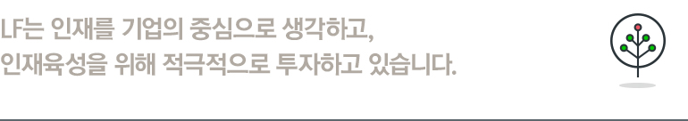
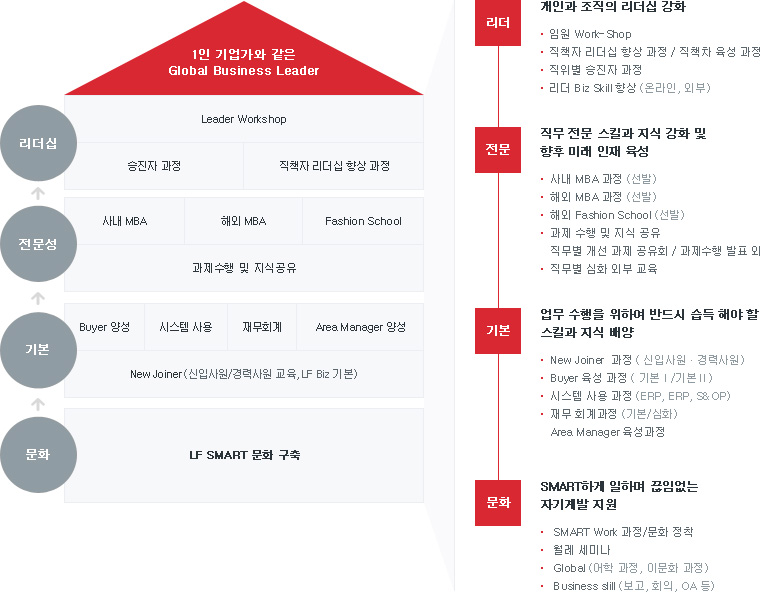

인재육성
종합 생활 문화 기업을 지향하는
LF는 핵심 LF인을 육성하기
위하여 인사 원칙과 기업 문화에
기반한 체계적이고 다양한 인재
육성 활동을 전개하고 있습니다.

※상기 제도를 기준으로 LF 각 계열사별 업(業)의 특성에 따라 적용/운영 합니다.
인재육성 제도
- 1.향우 LF를 이끌어 갈 핵심 Business Leader 육성
- 2.직무 전문 지식과 역량을 높이기 위한 사내외 과정 개발 및 운영
- 3.창의, 혁신과 도전을 위한 끊임없는 자기 계발 촉진
- 4.Smart하게 일 할 수 있는 기업 문화 정착
LF 교육 체계
1인 기업가와 같은 Global Business Leader
-
문화
- 육성방향
- LF SMART 문화 구축
-
기본
- 육성방향
- Buyer 양성,시스템 사용, 재무회계, Area Manager 양성, New Joiner (신입사원/경력사원 교육, LF Biz 기본)
-
전문성
- 육성방향
- 사내 MBA, 해외 MBA, Fashion School, 과제수행 및 지식공유
-
리더십
- 육성방향
- Leader Workshop,승진자과정, 직책자 리더십 향상 과정
교육 프로그램
-
문화
SMART하게 일하며 끊임없는 자기계발 지원
- SMART Work 과정/문화 정착
- 월례 세미나
- Global (어학 과정, 이문화 과정)
- Business slill (보고, 회의, OA 등)
-
기본
업무 수행을 위하여 반드시 습득 해야 할 스킬과 지식 배양
- New Joiner 과정 ( 신입사원 · 경력사원)
- Buyer 육성 과정 ( 기본Ⅰ/기본Ⅱ)
- 시스템 사용 과정 (ERP, ERP, S&OP)
- 재무 회계과정 (기본/심화)
- Area Manager 육성과정
-
전문
직무 전문 스킬과 지식 강화 및 향후 미래 인재 육성
- 사내 MBA 과정 (선발)
- 해외 MBA 과정 (선발)
- 해외 Fashion School (선발)
- 과제 수행 및 지식 공유
- 직무별 개선 과제 공유회 / 과제수행 발표 외
- 직무별 심화 외부 교육
-
리더
개인과 조직의 리더십 강화
- 임원 Work-Shop
- 직책자 리더십 향상 과정 / 직책차 육성 과정
- 직위별 승진자 과정
- 리더 Biz Skill 향상 (온라인, 외부)
LF 교육 체계도
※과장/대리 승진자 필수과정 이해도 평가 시행| 구문 | 사원 | 대리(전임) | 과장(선임) | 차장·부장(수석) | 임원(CD) | ||
|---|---|---|---|---|---|---|---|
| 리더십 리더십 향상 |
신임 대리 과정 | 신임 과장 과정 | 신임 차장·부장 과정 | 신임 임원 과정 | |||
| 직책자 리더십 향상 과정 | 임원 Workshop | ||||||
| 전문성 직무 전문성 |
해외 Fashion School & Internship | 외부 세미나 | |||||
| 사내 MBA 과정 | |||||||
| 해외 MBA 과정 | |||||||
| 직무별 개선 과제 수행 · 사례 발표회 | |||||||
| 직무별 사외 전문 과정 참가 | |||||||
| 기본 전 직원 필수 |
|
Buyer 육성과정 | |||||
| 시스템 사용 실습 과정 | |||||||
| 재무 회계 과정 | |||||||
| Area Manager 육성 과정 | |||||||
| 경력사원 입문 과정 | |||||||
| 문화 스마트한 문화/ |
전략 언어 사내 과정(중국어) | 임원 어학지원 | |||||
| 어학 지원 제도(영어/중국어/일어/이태리어 등) | |||||||
| 월례 세미나 · 온라인 교육 · 도서 연구 | |||||||
| SMART Work 문화 정착 및 지원 | |||||||